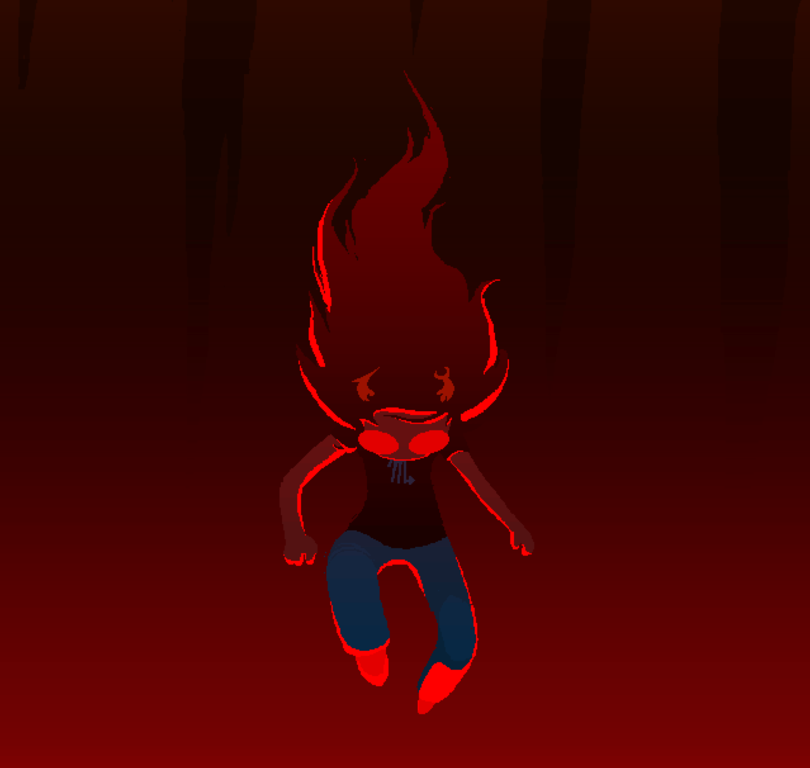
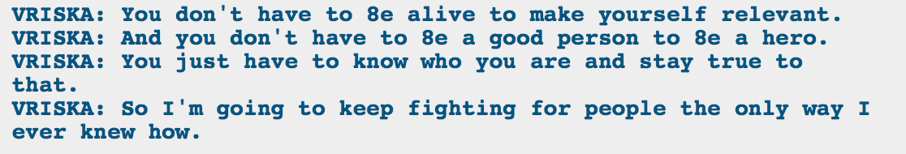
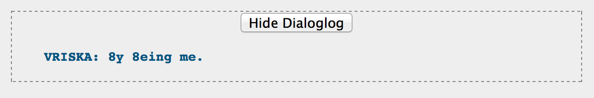

Okay I just quoted part of that in the last post, but man Vriska gets some great lines. She is so fucking cool. I love her so much.
She has to set aside her own goodness to be a hero. She can’t choose to be moral, she is in a place where she can’t try to be a good person. She just has to be herself.